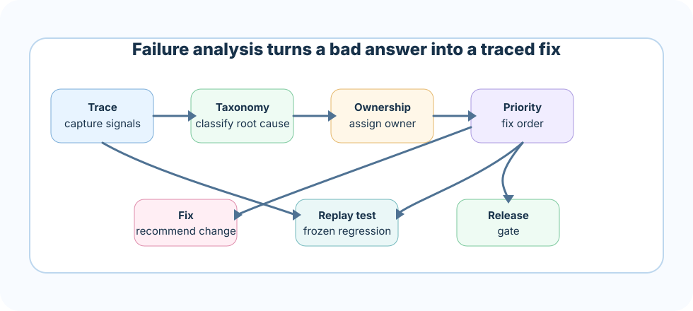

Prompt-tuning every failure
Symptom: if the gold chunk was never retrieved, prompt tuning is noise and the answer stays wrong.
Better move: confirm the gold chunk is in the final context before touching prompt wording.
Failure analysis is the discipline of turning bad RAG answers into precise engineering work. It keeps teams from randomly changing prompts, chunk sizes, retrievers, and models without understanding the root cause.
When a RAG answer fails, the visible symptom is usually "the answer is wrong." But the root cause may be far upstream. The source may not exist. The parser may have dropped a table. Chunking may have separated a condition from its exception. Retrieval may have missed the gold evidence. The prompt may have ignored a citation rule. The access layer may have filtered out the only useful document.
A senior RAG builder treats every failure as a traceable production signal.
When a plane has a hard landing, investigators do not just tell the pilot to "fly more carefully next time." They pull the flight recorder, reconstruct every decision point, and trace the event back through weather data, maintenance logs, air traffic instructions, and crew communication. The hard landing is the visible symptom. It is rarely the actual defect, and closing the file without finding the defect just schedules the next incident.
RAG failure analysis works the same way. A wrong answer is the hard landing. The real defect could be sitting in a missing document, a broken parser, a bad chunk boundary, a retriever that never surfaced the evidence, or a prompt that let the model guess. You do not close the investigation until you can point to the exact stage where the failure happened, and until you have a way to check tomorrow that it does not happen again.
A useful trace should include user question, detected intent, query rewrite, filters, retrieval route, candidate pool, reranker output, final context, prompt version, answer, citations, evaluator result, and user feedback.
question
-> query rewrite
-> filters and route
-> candidate chunks
-> reranked chunks
-> final context pack
-> prompt version
-> answer and citations
-> eval result and feedbackThe answer cannot be grounded because the organization never indexed an authoritative source.
Tables, footnotes, headings, or scanned text were extracted incorrectly.
The rule and exception landed in different chunks without parent context.
The right evidence exists but never appears in candidates.
If the source is missing, retrieval tuning cannot help. If parsing loses a table, chunking cannot recover it. Always verify source existence and parser quality before touching embedding settings.
Add source, assign owner, document authority, and re-index.
Repair parser, add parser regression test, compare extracted text.
Fix source version, access, section, freshness, or domain labels.
Retrieval failures split into recall failures and ranking failures. If gold evidence is absent from the candidate pool, improve chunking, filters, query rewriting, hybrid search, or indexing. If gold exists but ranks low, consider reranking, score fusion, or top-k policy.
If the final context contains the right evidence but the answer is unsupported, the problem is likely prompt, context injection, citation discipline, or model behavior. Check whether the prompt clearly says "use only evidence" and whether the answer cites the exact supporting source.
Safety failures include leaking restricted context, following instructions embedded in retrieved documents, using stale policies, or answering high-risk questions without enough evidence. These failures should become blocking tests.
Use this order: source existence, access/freshness policy, parsing, metadata, chunking, retrieval recall, ranking/reranking, context injection, prompt, answer formatting. This prevents polishing an answer path that lacks trustworthy evidence.

Every serious failure should become a replay test with frozen input, expected behavior, and owner. Replays are how teams avoid celebrating the same bug fix every month.
Build a failure triage board that receives traces, classifies root cause, assigns owner, recommends fix, and creates replay tests. This becomes the operating system for improving a production RAG product.
A strong answer sounds like this: "I treat every bad RAG answer as a trace, not a verdict. I follow the question through query rewriting, retrieval, ranking, context assembly, and generation to find the exact stage where it broke. I classify the failure against a taxonomy — corpus, parsing, chunking, retrieval, prompt, or safety — assign an owner, and prioritize by risk and frequency rather than fixing whatever complaint is loudest. Once I understand the root cause, I turn the incident into a replay test so the fix is permanent, and I use those replay tests as a release gate before shipping changes."